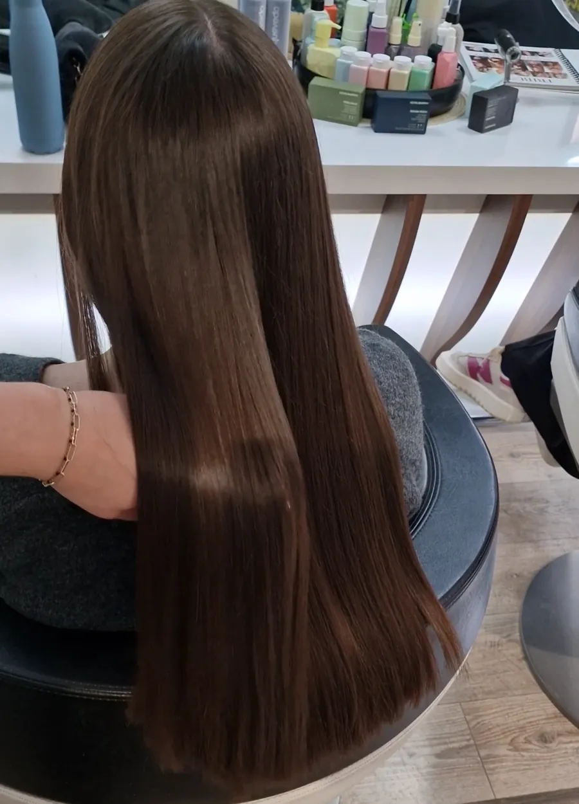
dès 200 €Lissage japonais & brésilien
Lissage japonais dès 300 €, brésilien dès 200 €. Pour un coup de lisse, le Steampod à 25 €.
« […] un lissage parfait sur cheveux frisés. […] »Marie, avis Salonkee
Lissage japonais et brésilien, mèches, ombré hair : plus de 20 ans de métier.
Un salon chaleureux sous papier peint jungle, rue des Croisiers, à deux pas de la gare de Namur. Colorations Kevin.Murphy sans ammoniaque, soins Kérastase, prix affichés.
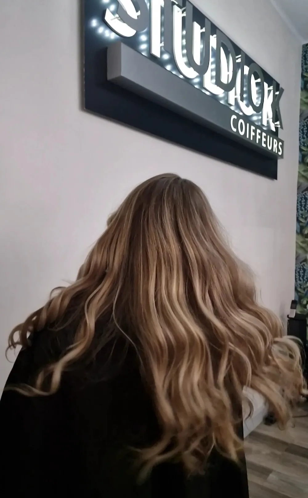
Sous l'enseigne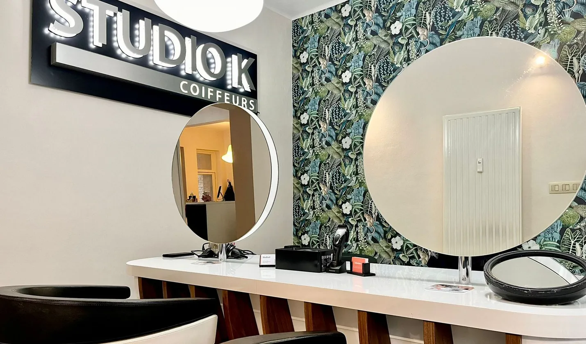
Les miroirs ronds★★★★★« Je suis client depuis des années. Keuly est super sympa et j’ai toujours été enchanté du résultat. »
« Un environnement chaleureux, convivial et vibrant », promet le salon. Des singes et des oiseaux exotiques au mur, l'enseigne à ampoules au-dessus des miroirs, un accueil noir et bois clair, les bacs au fond.
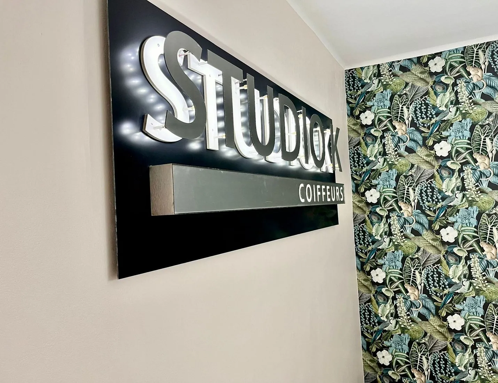
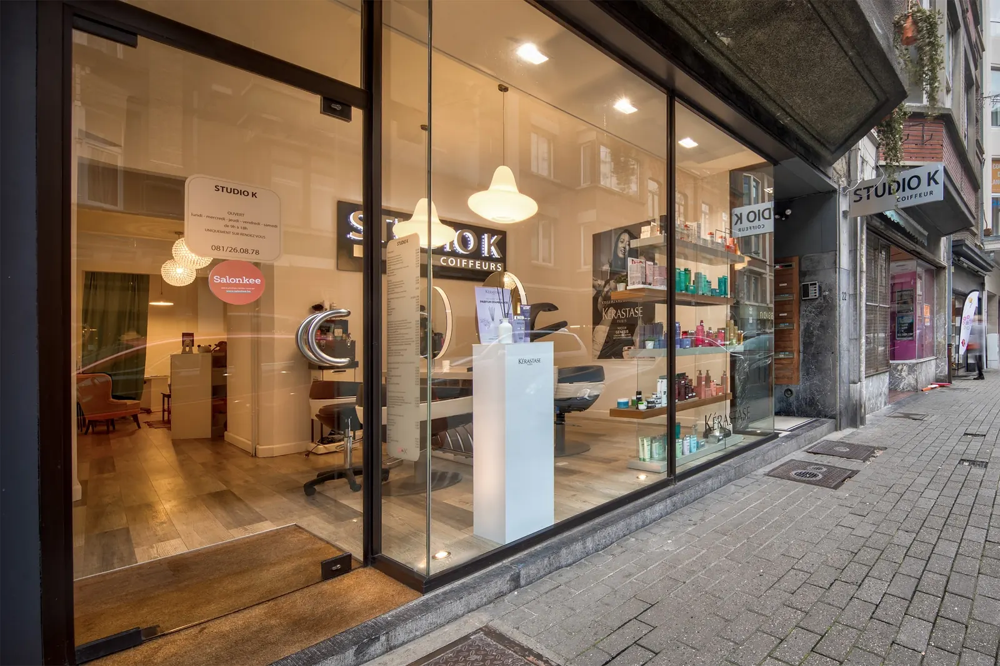
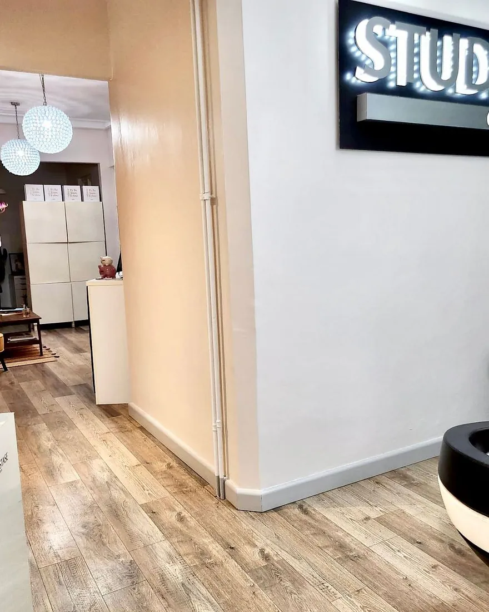
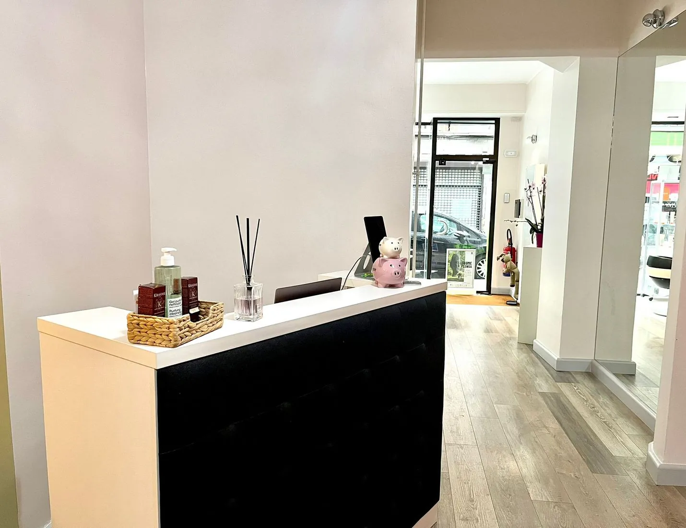
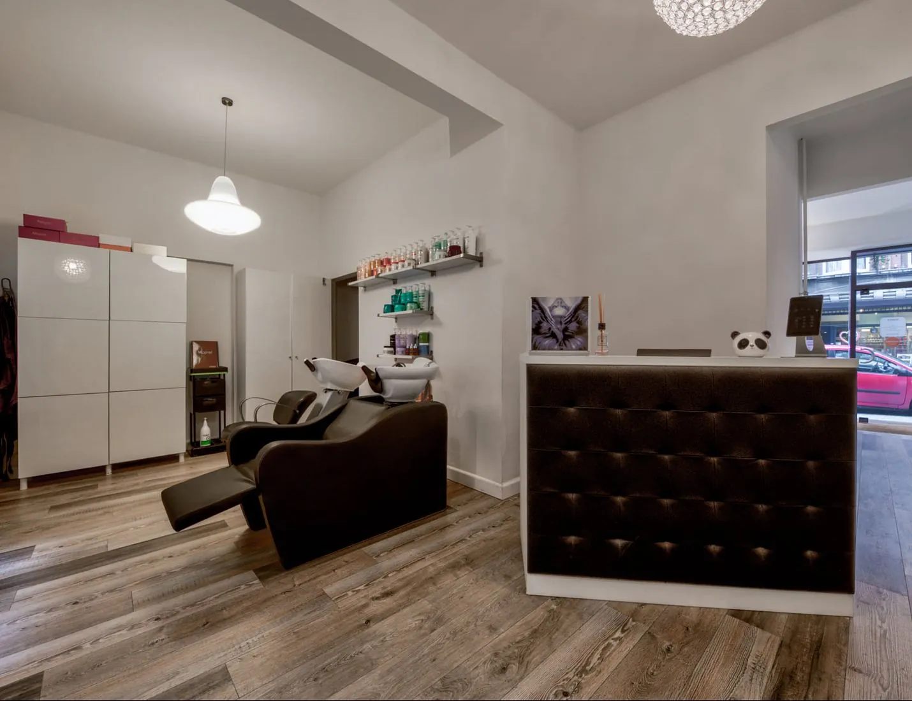
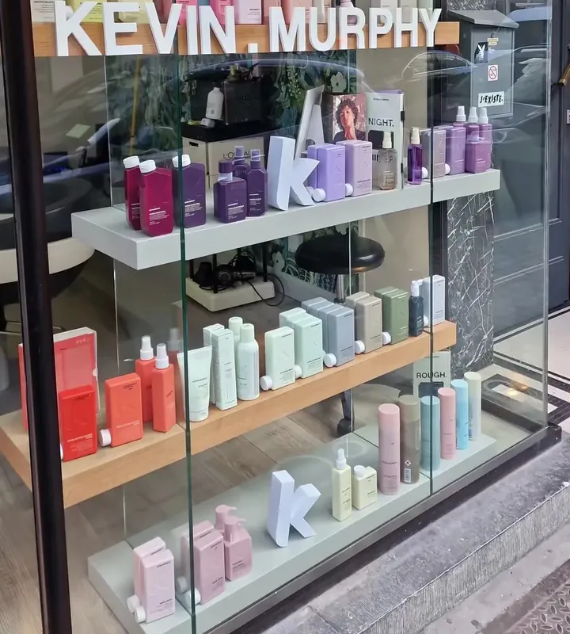
« Nous sommes expertes en lissage brésilien et japonais, également coloriste et visagiste […] » Ce que le salon dit de lui, ses prix de départ, et ce que ses clientes en disent.

dès 200 €Lissage japonais dès 300 €, brésilien dès 200 €. Pour un coup de lisse, le Steampod à 25 €.
« […] un lissage parfait sur cheveux frisés. […] »Marie, avis Salonkee
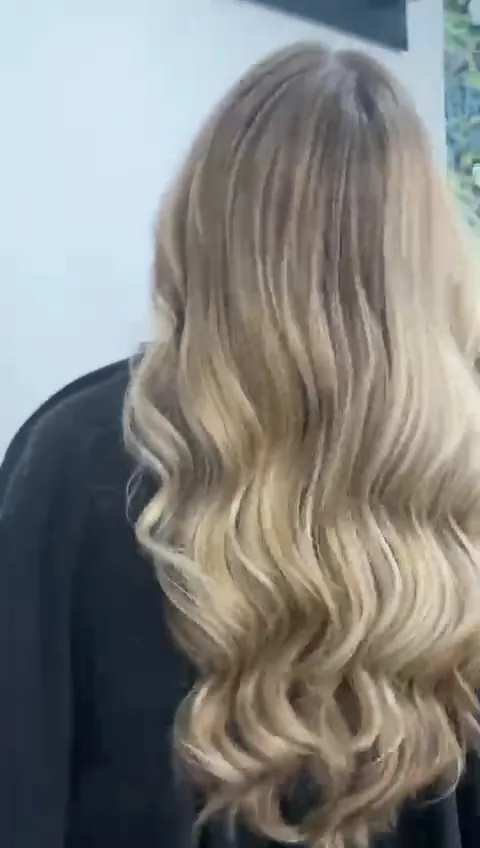
dès 89 €Mèches avec ou sans coulage, balayage, ombré hair dès 150 €, décoloration.
« […] résultat encore mieux qu’imaginé. […] (Mèches partout, coupe dégradée et brushing) »Céline, avis Salonkee
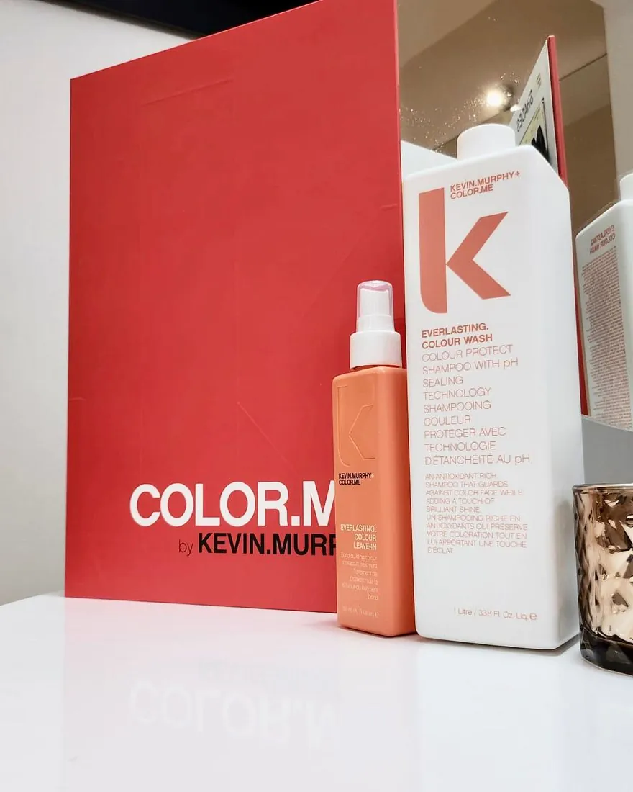
dès 79,50 €Colorations Kevin.Murphy au miel, à l'aloe vera et à la grenade : sans ammoniaque, sans parabène, sans PPD. Inoa et Dia Color aussi.
« […] Ma couleur est top! »Véronique, avis Salonkee
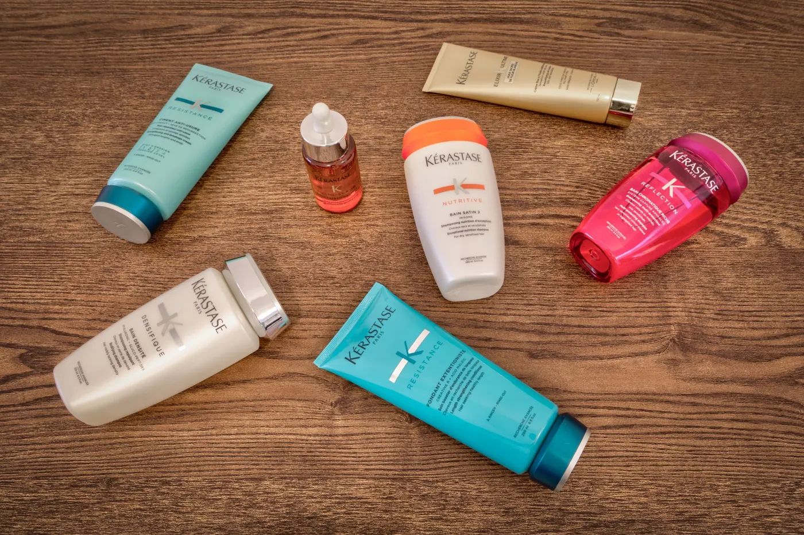
dès 14 €Rituel Kérastase à 14 €, Protocole Première à 75 €, Fusio-Dose. « […] nos produits chouchou au salon », dit Studio K.
« Excellent soin et super contente du résultat! »Bénédicte, avis Salonkee
La carte du salon telle qu'elle est publiée sur sa page Salonkee : femmes, hommes, enfants, couleur, mèches, lissages et soins. « Dès » : prix de départ affiché par le salon.
Astrid l'a écrit sur Salonkee, où le salon a 4,9 sur 5 pour 87 avis. Tous les avis ci-dessous sont cités mot pour mot.
Je suis client depuis des années. Keuly est super sympa et j’ai toujours été enchanté du résultat.
Service impeccable et accueil sympathique. La coiffeuse est à l'écoute. Je suis très contente du résultat qui correspond à mes attentes... un lissage parfait sur cheveux frisés. Je recommande vivement cette adresse
J’adore ce salon, ça fait plusieurs années que je viens chez Keuly, et je ne suis jamais déçu !
Coiffeuse à l’écoute, elle prend son temps pour vous, résultat encore mieux qu’imaginé. Elle est dynamique et très sympathique. (Mèches partout, coupe dégradée et brushing)
Lucile a de très bons conseils, l’ambiance du salon est sans prise de tête tout en restant professionnel. J’ai adoré mon expérience chez studio K, vous pouvez y aller les yeux fermés!
J’ai été très contente de découvrir ce salon et j’ai adoré ma coupe. Coiffeuse super sympa et ambiance chaleureuse. Je recommande et je reviendrai !!
Bonne ambiance, bonne musique et 2 coiffeuses super sympas !
Toujours un plaisir de se faire coiffer par des personnes talentueuses! Mes cheveux sont + resplendissants depuis que je les fais couper chez Studio K, merci ❤️
Première fois pour moi et très satisfaite ! Coiffeuse très gentille et à l'écoute, donne de bons conseils ! Très contente de ma coupe, prix très correct ! Je reviendrai 😊
La gentillesse et la compétence de Keuly !
Parfait, au-delà même des attentes ! Coupe parfait, accueil parfait et les meilleurs conseils jamais reçus ! Merci !
Super expérience aujourd’hui !
Ma couleur est top!
Avis publiés sur la page Salonkee « Studio K » (prénoms tels qu'affichés), relevés le 19 novembre 2026.
Sur Google aussi
La prestation, le jour, l'heure : les prix affichés sont ceux du salon, les jours et les heures suivent ses horaires, le lundi et du mercredi au samedi, de 9 h à 18 h.
Studio K prend déjà ses rendez-vous sur Salonkee. Sur le vrai site, ce module serait relié au même agenda : un seul planning, aucune double réservation.
Studio K coiffeursRue des Croisiers 22, 5000 Namur